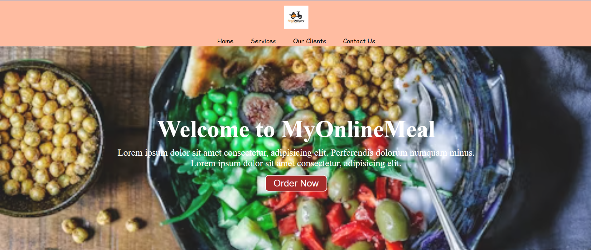

Projects and Coding Samples
- Our E-commerce platform serves as a direct link between farmers and consumers, revolutionizing the agricultural supply chain.
With an intuitive interface and robust features, we empower farmers to showcase their produce directly to consumers.
Through voice support, farmers can effortlessly list their goods for sale, enhancing accessibility and convenience.
Moreover, our platform acts as a liaison between farmers and contractors, facilitating the leasing of agricultural equipment.
This feature streamlines operations for farmers, providing them with access to essential tools while optimizing costs.
Built using HTML5, CSS, and JavaScript, our platform is designed for seamless navigation and user interaction. Whether you're
a farmer looking to reach a broader market or a consumer seeking fresh produce, our E-commerce solution offers a transformative
experience, fostering direct connections and promoting sustainability in agriculture.

- Certainly! Here's a revised version:
"A food delivery website with an exquisite user interface. The technologies employed include HTML and CSS.
It also features sections for our services, client testimonials, and a contact us page."
In addition, it includes a form where clients can provide their name, contact number, email,
and write their reviews or messages.